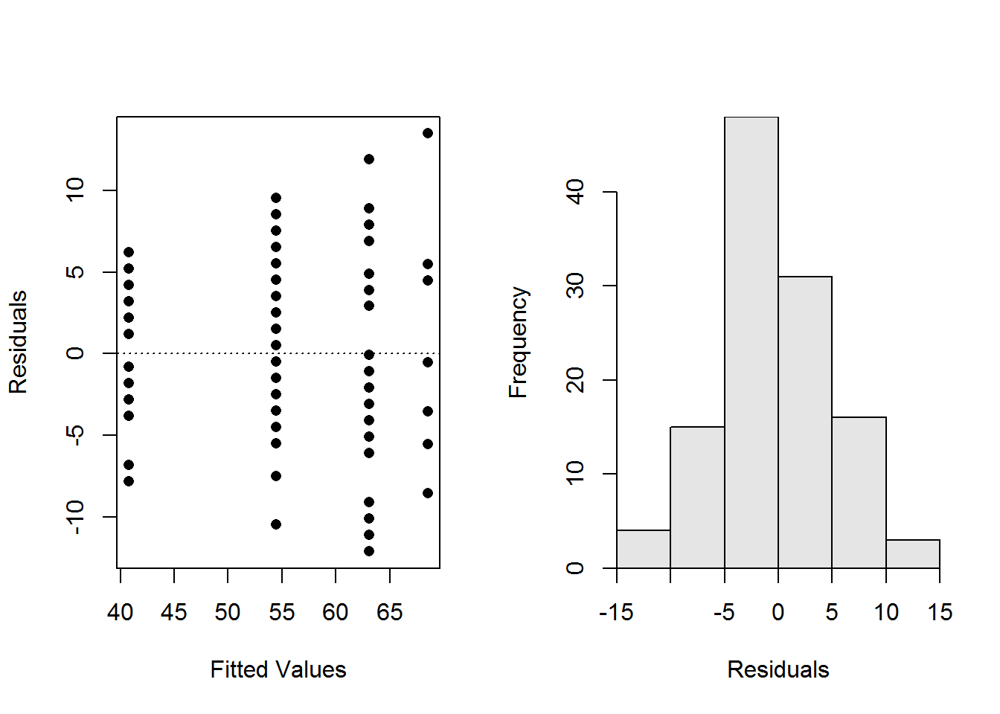
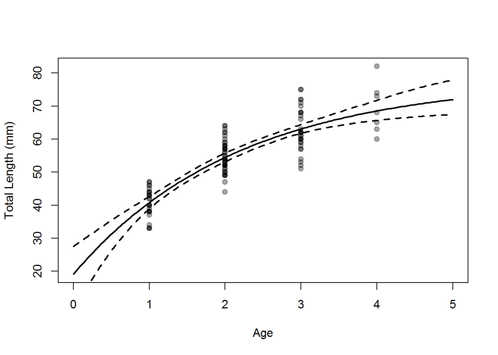

library(FSA)
library(FSAdata)
library(nlstools)
library(dplyr)
library(magrittr)
data(SculpinALTER)
vbTyp <- vbFuns("Typical")
svTyp <- vbStarts(tl~age,data=SculpinALTER,type="Typical")
fitTyp <- nls(tl~vbTyp(age,Linf,K,t0),data=SculpinALTER,start=svTyp)
bootTyp <- nlsBoot(fitTyp)
estsTyp <- cbind(Est=coef(fitTyp),confint(bootTyp))
p3Typ <- apply(bootTyp$coefboot,MARGIN=1,FUN=vbTyp,t=3)
p3Typ <- c(Est=vbTyp(3,coef(fitTyp)),quantile(p3Typ,c(0.025,0.975)))
halfLinf <- log(2)/coef(fitTyp)[["K"]]
x <- seq(0,5,length.out=199)
pTyp <- vbTyp(x,Linf=coef(fitTyp))
xlmts <- range(c(x,SculpinALTER$age))
ylmts <- range(c(pTyp,SculpinALTER$tl))
plot(tl~age,data=SculpinALTER,xlab="Age", ylab="Total Length (mm)",xlim=xlmts,
ylim=ylmts,pch=19,col=rgb(0,0,0,1/3))
lines(pTyp~x,lwd=2)
LCI <- UCI <- numeric(length(x))
for(i in 1:length(x)) {
tmp <- apply(bootTyp$coefboot,MARGIN=1,FUN=vbTyp,t=x[i])
LCI[i] <- quantile(tmp,0.025)
UCI[i] <- quantile(tmp,0.975)
}
ylmts <- range(c(pTyp,LCI,UCI,SculpinALTER$tl))
lines(UCI~x,lwd=2,lty="dashed")
lines(LCI~x,lwd=2,lty="dashed")
residPlot(fitTyp)
vbOrig <- vbFuns("Original")
svOrig <- vbStarts(tl~age,data=SculpinALTER,type="Original")
fitOrig <- nls(tl~vbOrig(age,Linf,K,L0),data=SculpinALTER,start=svOrig)
bootOrig <- nlsBoot(fitOrig)
estsOrig <- cbind(Est=coef(fitOrig),confint(bootOrig))
p3Orig <- apply(bootOrig$coefboot,MARGIN=1,FUN=vbOrig,t=3)
p3Orig <- c(Est=vbOrig(3,coef(fitOrig)),quantile(p3Orig,c(0.025,0.975)))
x <- seq(0,5,length.out=199)
pOrig <- vbOrig(x,Linf=coef(fitOrig))
xlmts <- range(c(x,SculpinALTER$age))
ylmts <- range(c(pTyp,SculpinALTER$tl))
plot(tl~age,data=SculpinALTER,xlab="Age", ylab="Total Length (mm)",xlim=xlmts,
ylim=ylmts,pch=19,col=rgb(0,0,0,1/3))
lines(pOrig~x,lwd=2)
LCI <- UCI <- numeric(length(x))
for(i in 1:length(x)) {
tmp <- apply(bootOrig$coefboot,MARGIN=1,FUN=vbOrig,t=x[i])
LCI[i] <- quantile(tmp,0.025)
UCI[i] <- quantile(tmp,0.975)
}
ylmts <- range(c(pOrig,LCI,UCI,SculpinALTER$tl))
lines(UCI~x,lwd=2,lty="dashed")
lines(LCI~x,lwd=2,lty="dashed")